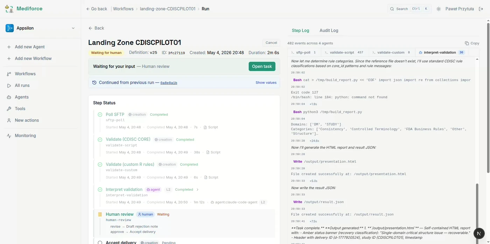
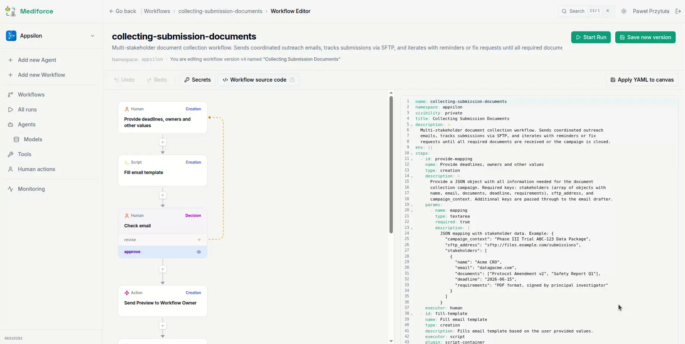

Two clinical workflows, running end to end.
Each one is a real process with a Control Mode on every step, so you can see exactly where an agent acts alone, where it drafts for review, and where a human has to decide.

Automated Clinical Data Delivery
A CRO drops files on an SFTP endpoint on no fixed schedule. The workflow notices, validates against CDISC standards, and produces a report a data manager either accepts or rejects. On a clean delivery the human sees one screen; on a bad one an agent drafts the note back to the CRO.

Automated Submission Document Collection
A submission needs documents from a dozen teams who all have other priorities. The workflow asks, tracks what has arrived, reviews what it gets, and writes every chase-up itself — leaving the deadline as the only thing a human has to care about.